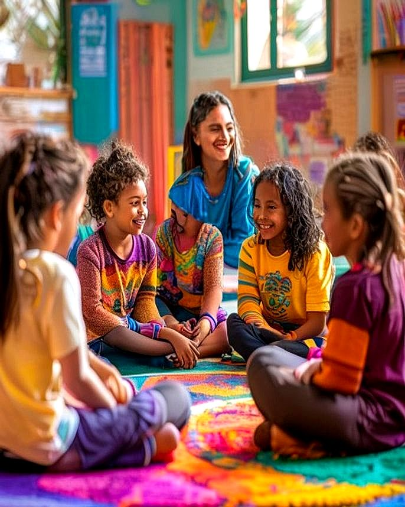

05 · Além do idioma
Desenvolvimento Socioemocional Bilíngue: Como a Educação Bilíngue Forma Crianças Mais Completas

Quando os pais pensam em educação bilíngue, o primeiro benefício que vem à mente costuma ser a fluência em outro idioma. Faz todo sentido: a capacidade de se comunicar em inglês abre portas profissionais, acadêmicas e culturais inestimáveis. Mas há uma camada igualmente poderosa — e muitas vezes subestimada — nesse processo: o desenvolvimento socioemocional bilíngue.
Crianças que crescem aprendendo duas línguas simultaneamente não apenas ampliam seu vocabulário. Elas desenvolvem uma forma diferente de perceber o mundo, de se relacionar com o outro e de lidar com seus próprios sentimentos. A ciência confirma, e a prática pedagógica já implementa: bilinguismo e inteligência emocional andam de mãos dadas.
Neste artigo, você vai entender como esse processo acontece, quais habilidades são mais impactadas e de que forma uma escola com metodologia estruturada — como a Maple Bear Bento Gonçalves — potencializa esse desenvolvimento desde os primeiros anos de vida da criança.
O Que é Desenvolvimento Socioemocional e Por Que Ele Importa Tanto
O desenvolvimento socioemocional refere-se ao processo pelo qual crianças aprendem a reconhecer e gerenciar suas próprias emoções, estabelecer relacionamentos saudáveis, demonstrar empatia, tomar decisões responsáveis e lidar com desafios de forma construtiva. Trata-se, em resumo, da base psicológica que sustenta toda a trajetória de vida de um indivíduo.
Organizações internacionais de referência em educação, como a CASEL (Collaborative for Academic, Social, and Emotional Learning), mapearam cinco dimensões centrais da aprendizagem socioemocional:
- Autoconsciência: reconhecer as próprias emoções, valores e pontos fortes;
- Autogestão: regular impulsos, gerenciar estresse e manter o foco em objetivos;
- Consciência social: compreender perspectivas alheias e demonstrar empatia;
- Habilidades de relacionamento: comunicar-se de forma eficaz, trabalhar em equipe e resolver conflitos;
- Tomada de decisão responsável: avaliar consequências e agir com ética.
Pesquisas longitudinais mostram que crianças com alto desenvolvimento socioemocional apresentam melhor desempenho acadêmico, menor índice de comportamentos de risco na adolescência e maior bem-estar na vida adulta. Em um mundo cada vez mais complexo e interconectado, essas habilidades não são diferenciais — são essenciais.
Por Que o Bilinguismo Potencializa as Habilidades Socioemocionais
A relação entre bilinguismo e desenvolvimento socioemocional não é intuitiva, mas é profundamente fundamentada em neurociência e psicologia do desenvolvimento. Ao aprender duas línguas desde cedo, o cérebro da criança é constantemente desafiado a realizar operações cognitivas sofisticadas — e muitas delas estão diretamente ligadas ao controle emocional e à percepção social.
O Exercício Constante do Controle Inibitório
Crianças bilíngues precisam, o tempo todo, "selecionar" qual língua usar e inibir a outra. Esse exercício contínuo fortalece o córtex pré-frontal — a região do cérebro responsável pelo controle dos impulsos, pela regulação emocional e pela capacidade de antecipar consequências. Na prática, isso significa que crianças com desenvolvimento socioemocional bilíngue tendem a ser mais pacientes, mais reflexivas antes de agir e mais capazes de controlar reações impulsivas.
Empatia Ampliada pelo Contato com Outra Cultura
Aprender uma língua é aprender uma visão de mundo. Quando uma criança estuda inglês dentro de uma metodologia de imersão cultural — como a canadense —, ela não apenas aprende palavras novas, mas absorve valores, formas de expressão e perspectivas diferentes das suas. Esse contato sistemático com a alteridade é um dos melhores exercícios de empatia que existe.
Estudos publicados no jornal Psychological Science demonstraram que crianças expostas a múltiplas línguas desde cedo apresentam maior facilidade em adotar perspectivas diferentes da sua própria — uma habilidade central tanto para a empatia quanto para a resolução de conflitos.
Resiliência Cognitiva e Tolerância à Frustração
O processo de aprendizado bilíngue não é linear. Há momentos de confusão linguística, de dificuldade para se expressar, de comparação com colegas. Atravessar essas fases com suporte pedagógico adequado desenvolve, de forma natural, a tolerância à frustração e a resiliência — duas competências emocionais fundamentais para a vida adulta.
Desenvolvimento Socioemocional Bilíngue em Cada Fase Escolar
O impacto do bilinguismo nas habilidades socioemocionais varia conforme a faixa etária. Entender como esse desenvolvimento se manifesta em cada etapa ajuda pais e educadores a potencializarem as oportunidades corretas no momento certo.
| Faixa Etária | Etapa Escolar (Maple Bear) | Habilidades Socioemocionais em Destaque | Como o Bilinguismo Contribui |
|---|---|---|---|
| 1,5 a 2 anos | Bear Care / Toddler | Apego seguro, primeiras expressões emocionais, confiança | Imersão acolhedora em inglês cria vínculos afetivos positivos com o novo |
| 3 a 4 anos | Nursery / JK | Autonomia, empatia inicial, cooperação em brincadeiras | Narrativas bilíngues ampliam o repertório emocional e a compreensão do outro |
| 5 anos | SK (Senior Kindergarten) | Autocontrole, resolução de conflitos, identidade | Navegação entre duas línguas fortalece controle inibitório e adaptabilidade |
| 6 a 11 anos | Ensino Fundamental I | Trabalho em equipe, liderança, pensamento crítico emocional | Projetos colaborativos bilíngues desenvolvem comunicação intercultural |
| 12 a 17 anos | Fundamental II e Médio | Gestão de ansiedade, identidade, tomada de decisão | Fluência em inglês amplia repertório para lidar com dilemas e perspectivas globais |
Como mostra a tabela, o desenvolvimento socioemocional bilíngue não é um evento pontual, mas um processo contínuo que se aprofunda e se complexifica à medida que a criança cresce. Por isso, a consistência metodológica ao longo dos anos é fundamental — e esse é exatamente o diferencial de uma escola que opera com currículo integrado desde a educação infantil até o ensino médio.
💡 Quer ver isso na prática?
Agende uma visita à Maple Bear Bento Gonçalves e conheça nossa metodologia pessoalmente.
Agendar Visita GratuitaA Metodologia Canadense e o Papel Central das Habilidades Socioemocionais
A educação canadense é internacionalmente reconhecida por colocar o bem-estar integral do estudante no centro da prática pedagógica. Não se trata de um detalhe curricular, mas de uma filosofia estruturante: a crença de que crianças felizes, seguras e emocionalmente saudáveis aprendem melhor — e se tornam pessoas melhores.
Aprendizado por Investigação e Autonomia Emocional
Na metodologia canadense, os alunos são incentivados a fazer perguntas, levantar hipóteses e construir conhecimento de forma ativa. Esse modelo — conhecido como inquiry-based learning — tem um efeito direto na autoestima e na autoconfiança das crianças. Quando um aluno percebe que suas perguntas têm valor e que o erro faz parte do processo de aprendizado, ele desenvolve uma relação saudável consigo mesmo e com o conhecimento.
Metacognição: Aprender a Conhecer a Si Mesmo
Um dos pilares mais sofisticados da metodologia canadense é o desenvolvimento da metacognição — a capacidade de pensar sobre o próprio pensamento. Na prática pedagógica, isso significa que os alunos são regularmente convidados a refletir sobre como aprendem, quais estratégias funcionam melhor para eles e onde precisam de mais apoio.
Essa prática tem um impacto direto e profundo no desenvolvimento socioemocional: a criança que aprende a observar seus próprios processos mentais também aprende a identificar suas emoções, seus gatilhos e seus padrões de comportamento. É o início de uma jornada de autoconsciência que se estende por toda a vida.
Avaliação por Portfólio: Progresso, Não Pressão
A avaliação por portfólio, adotada na Maple Bear Bento Gonçalves, é outro elemento com forte impacto socioemocional. Ao contrário das provas tradicionais — que criam pressão, ansiedade e uma visão reducionista de desempenho —, o portfólio documenta a jornada de aprendizado de forma holística. O foco deixa de ser o acerto ou o erro pontual e passa a ser o crescimento contínuo de cada criança, em seu próprio ritmo.
Esse modelo reduz a ansiedade escolar, fortalece a autoestima e ensina as crianças a valorizarem o processo — não apenas o resultado. Uma lição que vai muito além da sala de aula.
💡 Você Sabia?
Pesquisas da Universidade de Chicago mostram que crianças bilíngues apresentam, em média, maior habilidade para entender o ponto de vista de outras pessoas em comparação com crianças monolíngues da mesma faixa etária. Esse benefício é atribuído ao exercício constante de "trocar de perspectiva" que o bilinguismo exige — e está diretamente relacionado ao desenvolvimento da empatia e da inteligência emocional. Na Maple Bear, esse potencial é cultivado diariamente por meio de projetos, brincadeiras e interações estruturadas em dois idiomas.
Habilidades Socioemocionais que a Educação Bilíngue Desenvolve na Prática
Sair da teoria e observar como o desenvolvimento socioemocional bilíngue se manifesta no cotidiano escolar é fundamental para que pais compreendam o valor real desse modelo educacional. Veja, a seguir, as principais habilidades que são desenvolvidas de forma consistente:
1. Comunicação Empática e Escuta Ativa
Aprender a se expressar em dois idiomas obriga a criança a prestar atenção às nuances da linguagem — entonação, contexto, intenção. Isso a torna uma comunicadora mais cuidadosa e uma ouvinte mais atenta. No ambiente bilíngue, os alunos também aprendem que há múltiplas formas de dizer a mesma coisa — e que nem sempre a sua versão é a única válida. Uma lição poderosa de humildade comunicativa.
2. Flexibilidade Cognitiva e Adaptabilidade
Alternar entre dois sistemas linguísticos exige uma mente flexível. Essa flexibilidade cognitiva transborda para outros aspectos da vida: crianças bilíngues tendem a se adaptar melhor a mudanças, a lidar com situações inesperadas com mais calma e a encontrar soluções criativas para problemas. No mundo atual — marcado por transformações aceleradas —, adaptabilidade é uma das habilidades mais valorizadas tanto no mercado de trabalho quanto nas relações pessoais.
3. Identidade Cultural e Pertencimento
A educação bilíngue bem conduzida não apaga a identidade cultural da criança — ela a fortalece. Ao mesmo tempo em que mergulham na cultura canadense, os alunos da Maple Bear continuam celebrando e conhecendo suas raízes brasileiras. Esse trânsito entre culturas cria um senso de identidade mais amplo, mais seguro e mais aberto à diversidade. Crianças que sabem quem são e de onde vêm têm mais facilidade para se relacionar com quem é diferente delas.
4. Liderança Colaborativa
O programa de liderança presente na metodologia canadense ensina que liderar não é sinônimo de mandar — é inspirar, incluir e colaborar. Em projetos bilíngues em grupo, os alunos praticam a escuta, a delegação, o reconhecimento das habilidades do outro e a tomada de decisão coletiva. Essas são habilidades que o mercado e a sociedade demandam com cada vez mais urgência.
5. Gestão da Ansiedade e Regulação Emocional
O ambiente escolar bilíngue, quando bem estruturado, cria uma zona de desconforto seguro — espaços em que a criança é desafiada, mas nunca abandonada. Professores bilíngues capacitados reconhecem sinais de ansiedade linguística e ajudam os alunos a desenvolverem estratégias de regulação emocional. Com o tempo, a criança internaliza essas estratégias e passa a aplicá-las em outros contextos da vida.
O Papel dos Pais no Desenvolvimento Socioemocional Bilíngue
A escola é um agente fundamental, mas não é o único. O ambiente familiar tem papel decisivo no desenvolvimento socioemocional de qualquer criança — e isso é ainda mais verdadeiro no contexto bilíngue. Algumas atitudes simples fazem grande diferença:
- Valorize o processo, não apenas os resultados: celebre o esforço, a curiosidade e a perseverança — não apenas as notas ou a fluência rápida;
- Mantenha um ambiente emocionalmente seguro em casa: crianças que se sentem seguras para errar em casa chegam à escola mais abertas para aprender;
- Estimule conversas sobre sentimentos: pergunte como a criança se sentiu em determinadas situações, inclusive nas aulas em inglês;
- Consuma conteúdo bilíngue em família: filmes, músicas e livros em inglês reforçam o aprendizado e criam momentos de conexão;
- Seja parceiro da escola: acompanhe o portfólio do seu filho, participe das reuniões pedagógicas e mantenha um diálogo aberto com os professores.
A parceria entre família e escola é, em si, um modelo poderoso de desenvolvimento socioemocional. Quando a criança percebe que os adultos mais importantes de sua vida estão alinhados e colaborando, ela se sente mais segura, mais amada e mais capaz.
Se você quer saber como a Maple Bear estrutura essa parceria no dia a dia, conheça a proposta pedagógica completa da Maple Bear Bento Gonçalves e descubra como sua família pode fazer parte dessa comunidade.
Perguntas Frequentes sobre Desenvolvimento Socioemocional Bilíngue
A partir de que idade a educação bilíngue já impacta o desenvolvimento socioemocional?
Os impactos começam desde os primeiros meses de vida. Bebês e crianças muito pequenas já processam os dois idiomas de forma simultânea, e esse exercício fortalece conexões neurais associadas à regulação emocional e à atenção. Na Maple Bear Bento Gonçalves, o programa começa a partir de 1 ano e 6 meses, no estágio Bear Care, com uma abordagem lúdica e acolhedora que respeita o desenvolvimento natural de cada criança.
O aprendizado de duas línguas pode causar confusão emocional ou de identidade na criança?
Não, quando feito de forma estruturada e com suporte pedagógico adequado. A confusão linguística temporária — chamada de "code-switching" — é uma fase normal e esperada do desenvolvimento bilíngue. Com o apoio certo, ela se resolve naturalmente e não gera impacto negativo na identidade ou no equilíbrio emocional. Pelo contrário, crianças bilíngues tendem a desenvolver uma identidade mais rica e uma maior abertura à diversidade.
Como a escola avalia o desenvolvimento socioemocional dos alunos?
Na Maple Bear, a avaliação por portfólio permite registrar não apenas o desempenho acadêmico, mas também o desenvolvimento emocional, social e comportamental de cada aluno ao longo do tempo. Professores observam e documentam como cada criança lida com desafios, interage com colegas, expressa suas emoções e evolui em suas habilidades de colaboração. Essas observações são compartilhadas com as famílias em reuniões pedagógicas regulares.
O bilinguismo realmente faz diferença para habilidades como empatia e liderança, ou isso é exagero?
Não é exagero — a ciência confirma. Estudos de universidades como Chicago, York e Edinburgh demonstram que crianças bilíngues apresentam vantagens mensuráveis em teoria da mente (capacidade de entender o ponto de vista alheio), controle inibitório e flexibilidade cognitiva — todas diretamente ligadas à empatia, ao autocontrole e à liderança. Claro que o bilinguismo, por si só, não garante esses resultados: a metodologia pedagógica, o ambiente escolar e o suporte familiar são igualmente decisivos.
É possível ingressar na Maple Bear em etapas mais avançadas, como o Ensino Fundamental?
Sim. Embora o início precoce traga vantagens neurológicas importantes, a Maple Bear recebe alunos em diferentes etapas do percurso escolar. A equipe pedagógica realiza uma avaliação de ingresso e, quando necessário, oferece suporte individualizado para que o aluno se adapte à metodologia e ao ambiente bilíngue de forma gradual e segura — inclusive sob o aspecto socioemocional.
Conclusão: Educar para a Vida Começa com Inteligência Emocional
Vivemos em um tempo em que as competências técnicas, por mais importantes que sejam, já não são suficientes para garantir uma vida plena e bem-sucedida. O mercado de trabalho do futuro — e, sobretudo, as relações humanas que constroem esse futuro — demanda pessoas com alta inteligência emocional, capacidade de colaborar com diversidade e resiliência para navegar a incerteza.
O desenvolvimento socioemocional bilíngue não é um efeito colateral positivo da educação em dois idiomas. É, na verdade, um de seus pilares mais profundos. Quando uma criança aprende a se mover entre línguas, culturas e perspectivas desde cedo, ela está construindo as bases de uma inteligência emocional robusta — e de uma cidadania genuinamente global.
Na Maple Bear Bento Gonçalves, esse entendimento guia cada projeto pedagógico, cada interação em sala de aula e cada parceria com as famílias. A missão vai além do inglês fluente: é formar seres humanos completos, conscientes e compassivos, prontos para fazer a diferença no mundo que herdarão.
Se você quer saber mais sobre como nossa escola trabalha o desenvolvimento integral do seu filho, entre em contato e agende uma visita. Será um prazer mostrar, na prática, o que significa educar com coração e método.
Quer receber conteúdo como esse?
Deixe seu nome e WhatsApp — abrimos uma conversa direta com você sobre a Maple Bear Bento Gonçalves.
🔒 Não armazenamos nada. Abre direto no WhatsApp da escola.
Conheça a Maple Bear Bento Gonçalves.
Em Bento desde 2025 (Toddler ao Kindergarten); em 2027 abrimos o Year 1. Venha conhecer a escola e o projeto pedagógico pessoalmente.
📅 Agendar minha visita pelo WhatsAppVagas limitadas · pré-matrícula 2027 (Year 1) aberta